2 Main Field and Gradient Coils
Suggestions of all kinds for these lecture notes are welcome — whether it’s fixing small errors, raising bigger questions, or offering new perspectives. Please share comments through GitHub Issues. To make feedback easier to address, please point to the section you have in mind — by section number or a short snippet of text.
2.1 Main Field and Gradient-Coil Overview
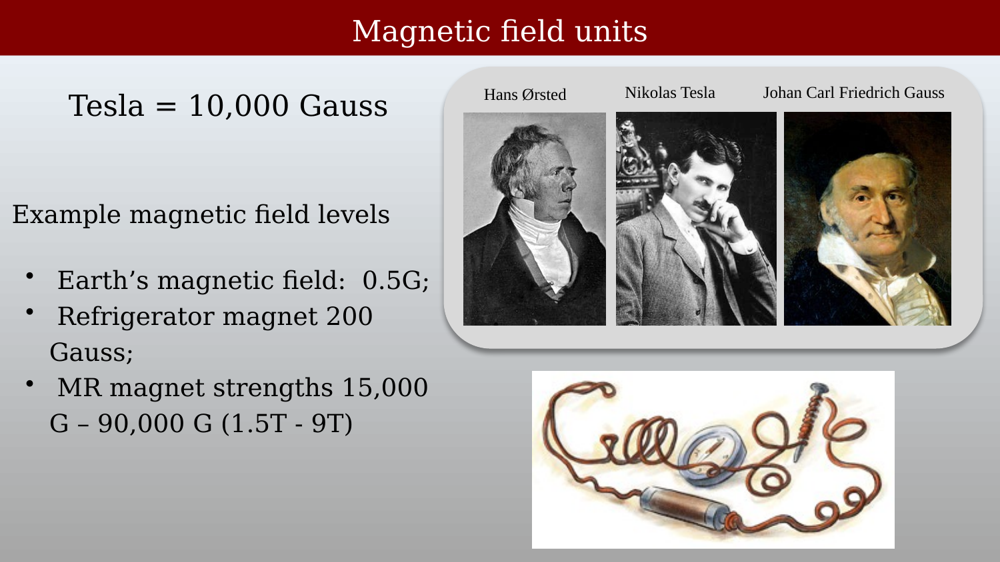
Electricity and magnetism are inseparable in an MRI scanner: electric currents generate the main, gradient, and RF magnetic fields. You will hear about these signals and their measurement units whenever you read about MR experiments. Several important units of electricity and magnetism are named after the three scientists in the slide: Oersted (Oe), Tesla (T), and Gauss (G).
The connection between electricity and magnetism was first demonstrated by the Danish physicist Hans Christian Ørsted in 1820, when he showed that a current-carrying wire deflected a compass needle placed beneath it — the experiment sketched at the lower right of the slide. Gauss developed mathematical foundations for describing magnetic fields, and Tesla applied these principles in practical electromagnetic devices.
In MRI, the main field \(B_0\) is normally specified in tesla. For scale, Earth’s magnetic field is about 0.5 gauss, and a refrigerator magnet is roughly 200 gauss. Most clinical MRI systems operate at 1.5 or 3 tesla; higher-field human systems, such as 7 T and 9.4 T, are used primarily for research, although 7 T has limited clinical use.
2.2 Magnetic Field Units
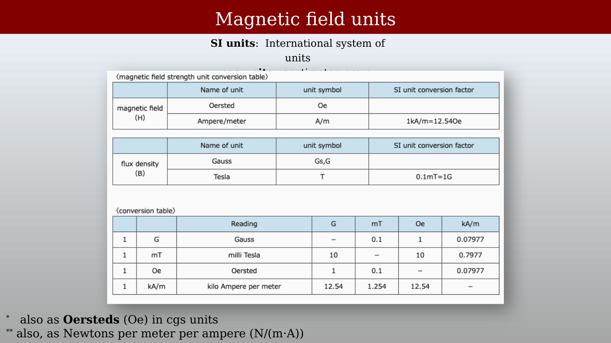
Two related magnetic field quantities describe magnetic effects:
- H (magnetic field strength): measured in amperes per meter (A/m)
- B (magnetic flux density): measured in tesla (T)
In free space, these quantities are related by:
\[B = \mu_0 H\]
where the permeability of free space is \(\mu_0 = 4\pi \times 10^{-7}\) T·m/A. Look at the units. You can see that the constant converts the units of H into the units of B.
Within magnetic materials, magnetization also contributes to \(B\), so the scalar relating them depends on the material.
MRI conventionally reports \(B_0\) in tesla; \(1\ \text{T} = 10{,}000\ \text{G}\).
2.3 Generating the Static Magnetic Field (\(B_0\))
2.3.1 The Helmholtz Pair
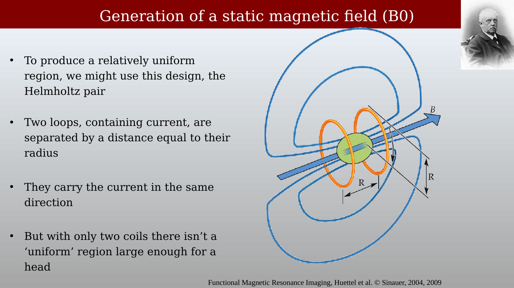
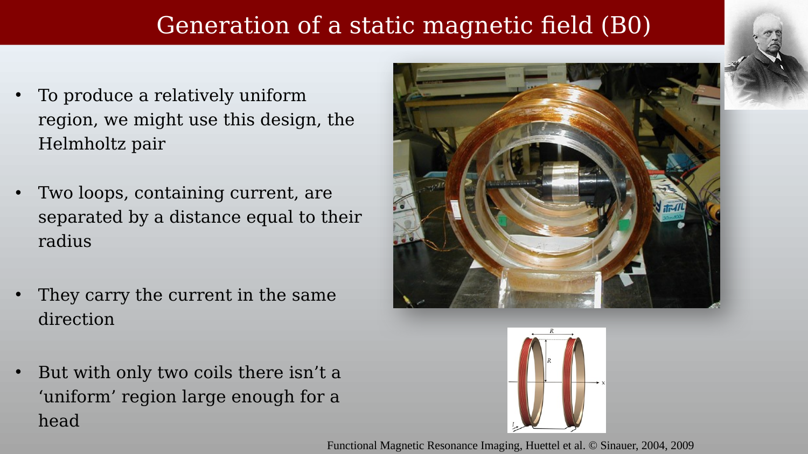
A simple way to create a magnetic field is to run current through a pair of wires. The simplest example is the Helmholtz pair, which uses two loops carrying current in the same direction, separated by a distance equal to their radius. This geometry produces a relatively uniform field in the region between the coils. A pair can be made large enough to surround a human head, but this simple geometry cannot achieve the stringent homogeneity required throughout an MRI imaging volume.
2.3.2 The Solenoid Design
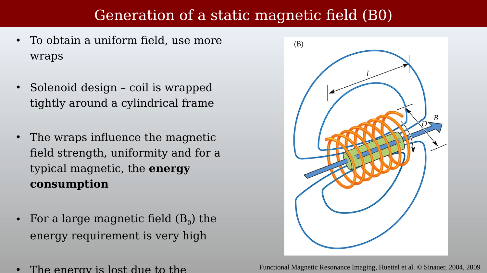
To produce a more uniform field over a large volume, an MRI main magnet uses multiple, carefully positioned coaxial windings. Starting with two, and then going to many, is something you will see again and again in engineering design and practice.
The number, placement, and current of the loops (usually called **windings*) determine the magnetic field strength and its uniformity (homogeneity). Adding windings or increasing current through the windings increases the field; in an MRI magnet, the winding geometry is optimized to make \(B_0\) highly uniform throughout the imaging volume.
2.4 Superconducting Magnets
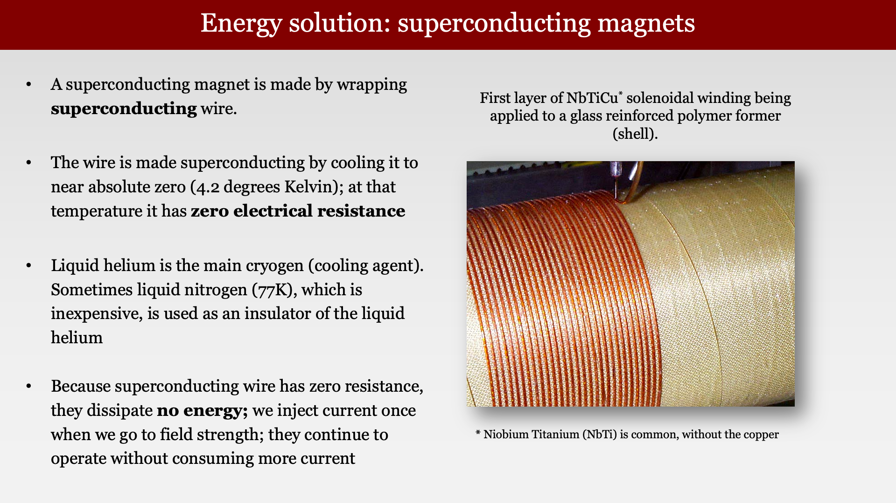
If an MR magnet windings were made with conventional resistive conductor, such as copper, maintaining an MRI-strength magnetic field would dissipate enormous power. MR scanners are only practical because superconducting technology permits persistent current to flow with negligible resistance. The key is to achieving this state is that the conductor must remain below its critical temperature, magnetic-field, and current limits.
The superconducting wire in MRI magnets is commonly niobium-titanium (NbTi) wire. It is wound into multiple loops and kept below its critical temperature, typically near 4 Kelvin in a liquid helium cryostat. A superconducting switch closes the circuit after the magnet is ramped to field, allowing the current to circulate round and roun through the windings, with essentially no resistance and thus no loss. The cryogenic system requires power to maintain the low temperature, but it requires no power to run the massive current through the windings.
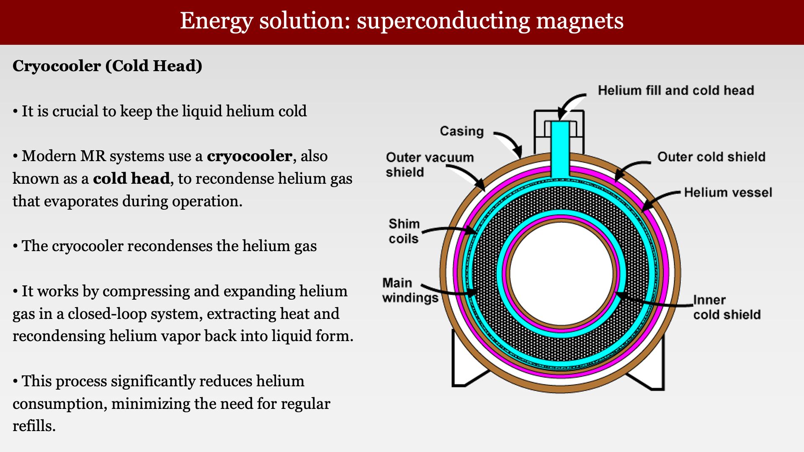
Liquid helium is the traditional primary cryogen. Thermal shields and vacuum insulation reduce the heat reaching the helium vessel; older magnet designs sometimes used liquid nitrogen as an additional, relatively inexpensive thermal shield.
Many modern superconducting MR systems use a cryocooler (cold head) to remove heat from the cryostat. In a recondensing system, the cold head condenses helium vapor back into liquid, greatly reducing helium loss and the need for refills. The cryocooler operates with a separate, closed helium-gas cycle that alternately compresses and expands the gas to create a cold stage near 4 K.
2.5 Gradient Coils
The main magnet’s job is to make \(B_0\) as uniform as possible. The gradient coils do the opposite: they deliberately add a small, controlled, spatially varying field on top of \(B_0\), so that the resonant frequency depends on position. This spatial encoding, together with RF excitation, signal reception, and image reconstruction, makes MRI possible; the encoding is developed fully in the image-formation part of the book.
2.5.1 The Maxwell Pair: a Z Gradient
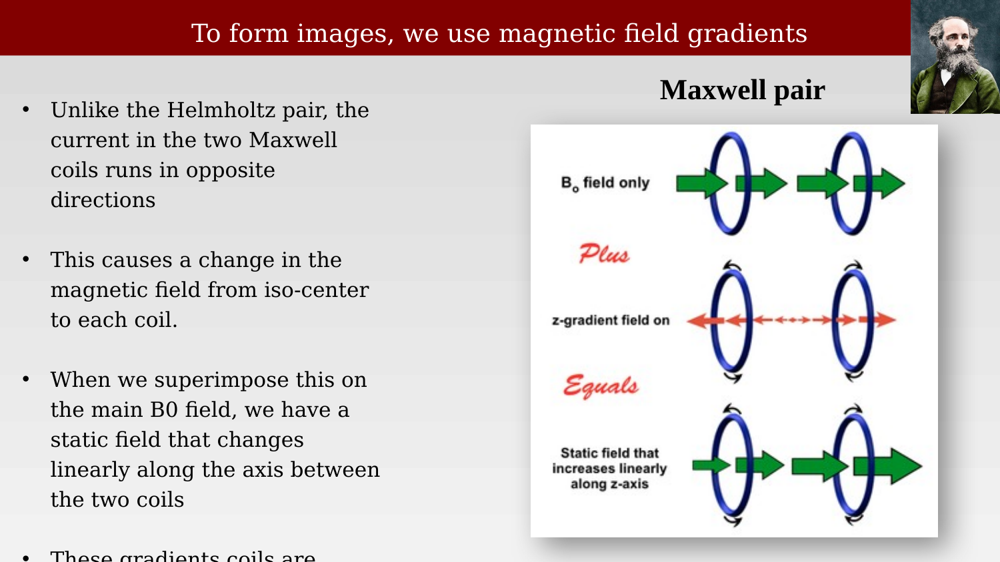
Unlike the Helmholtz pair, the two coils of a Maxwell pair carry current in opposite directions. Their fields cancel at isocenter and change approximately linearly near the center. When this field is added to the main field, the local axial field is approximately \(B_z(z) = B_0 + G_z z\), where \(G_z\) is the z-gradient amplitude in T/m. This z-gradient makes the field strength depend on position along the bore.
2.5.2 Three Orthogonal Gradient Fields
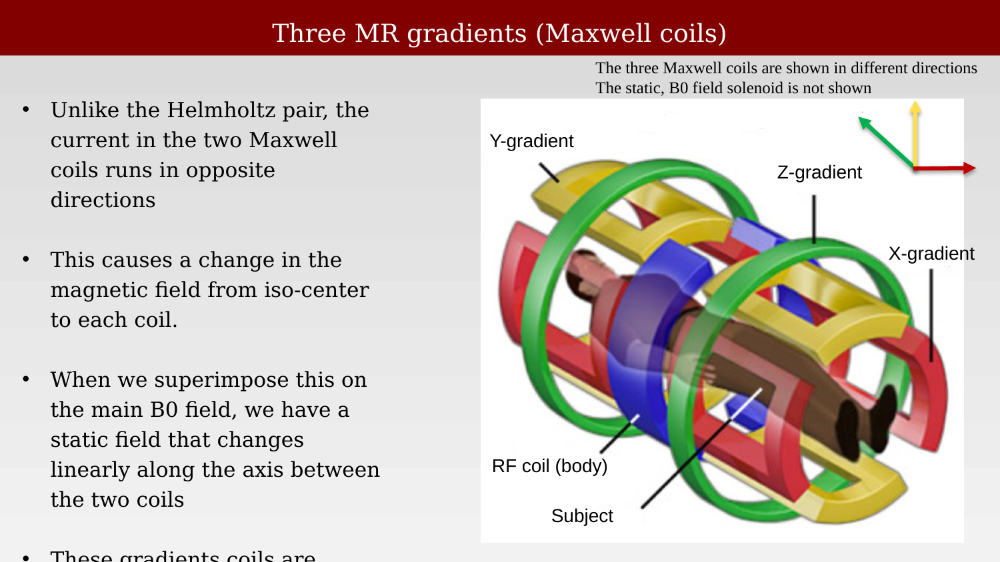
MRI requires three independently controlled gradient fields to encode position in all three dimensions. The z-gradient is often produced by a Maxwell-like pair of loops; the x- and y-gradients use saddle-shaped windings around the bore. Each produces a field that varies approximately linearly along its named axis, allowing the scanner to select and encode spatial locations.
All three gradient coils, along with the RF body coil, are nested concentrically inside the bore of the main magnet — the arrangement shown in Figure 2.9.
In a simplified transverse-gradient design, saddle-shaped conductors lie on the cylindrical surface of the bore. Their straight sections run lengthwise along the cylinder and are joined by curved end sections, so the pattern resembles a saddle on a horse. Two symmetric saddle pairs can produce the desired transverse gradient while cancelling unwanted uniform and higher-order fields. Practical whole-body gradient coils use more complex distributed winding patterns, optimized for linearity, efficiency, Lorentz forces, heating, and peripheral-nerve-stimulation limits.
The conductors are manufactured and positioned very precisely, then driven together as one gradient coil. They are not ordinarily calibrated as independent saddles. Instead, scanner calibration measures the behavior of the complete gradient system — its amplitude, axis alignment, cross-axis coupling, timing, and eddy currents — and adjusts amplifier gains and pre-emphasis to correct residual errors.
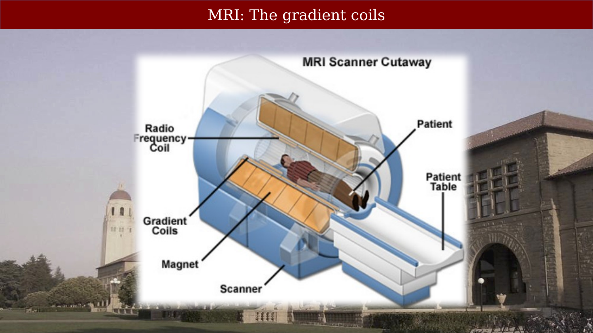
Figure 2.10 puts the whole instrument together. Working outward from the subject: the RF transmit and receive hardware (Section 3.1), then the three gradient coils that encode position, then the superconducting main magnet that supplies \(B_0\). Each layer of that diagram corresponds to a section of this part of the book.
2.6 Shimming
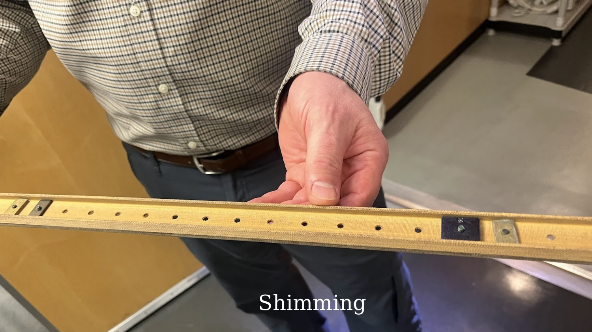
For all of the high technology, some methods for adjusting the magnetic field are remarkably simple. This image shows a small ferromagnetic piece that can be positioned along a holder to make a local correction to \(B_0\). These passive shims reduce selected spatial variations in \(B_0\); scanners also use actively controlled shim coils for adjustable corrections. Neither method makes the field perfectly homogeneous or corrects all subject-induced susceptibility effects.
2.7 Gradient Coil Replacement at the CNI

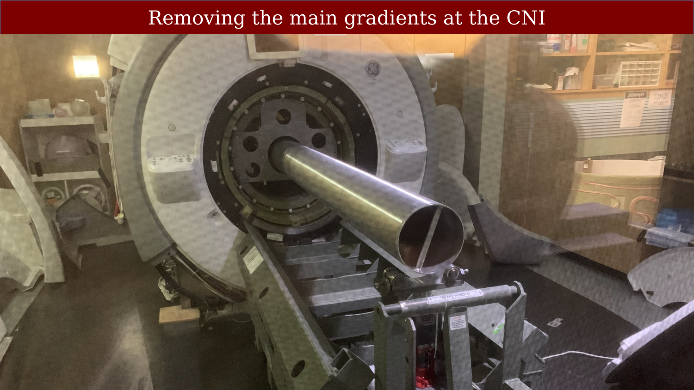
The two images in these panels were taken during the Ultra-High Performance (UHP) gradient upgrade at the CNI: the new gradient coil arriving, and the old coil being withdrawn from the bore to make room for it. The installation required precise mechanical alignment within the magnet bore, as well as careful attention to the strong static field.